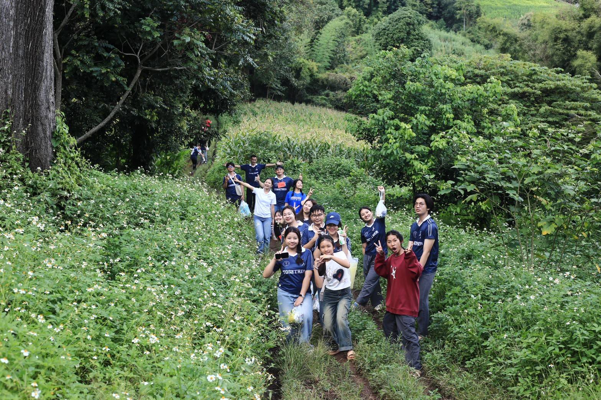
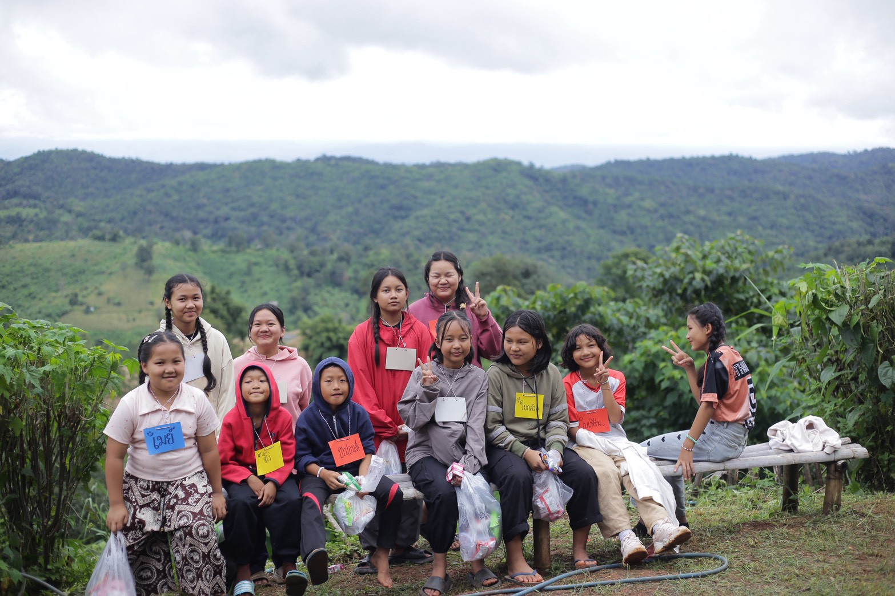
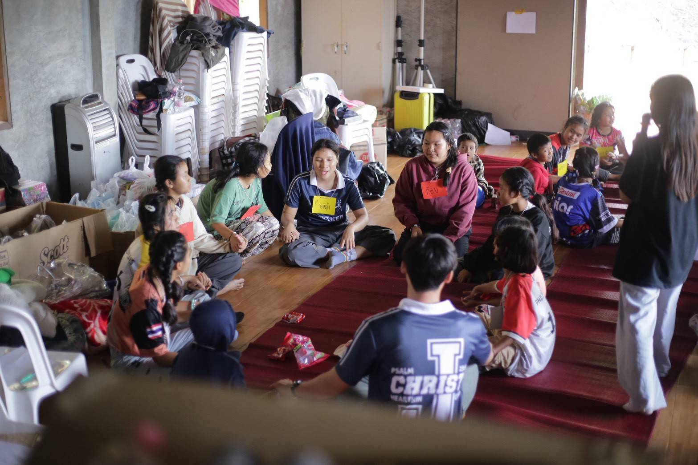
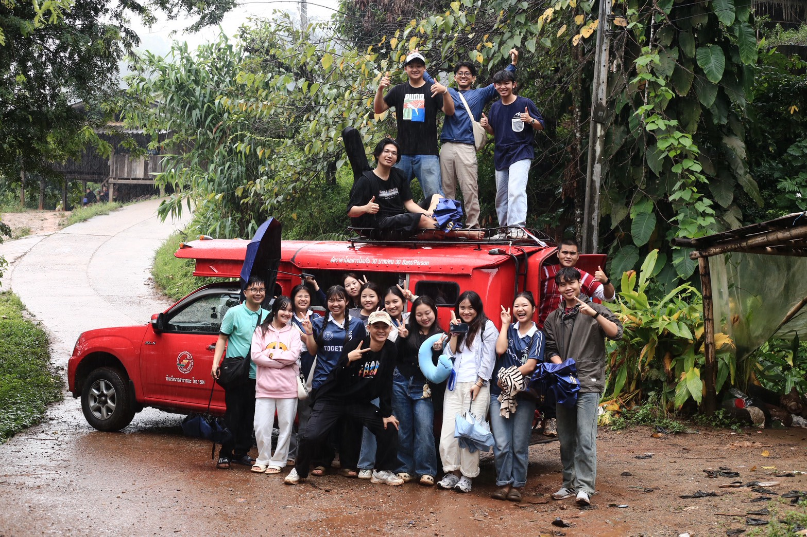
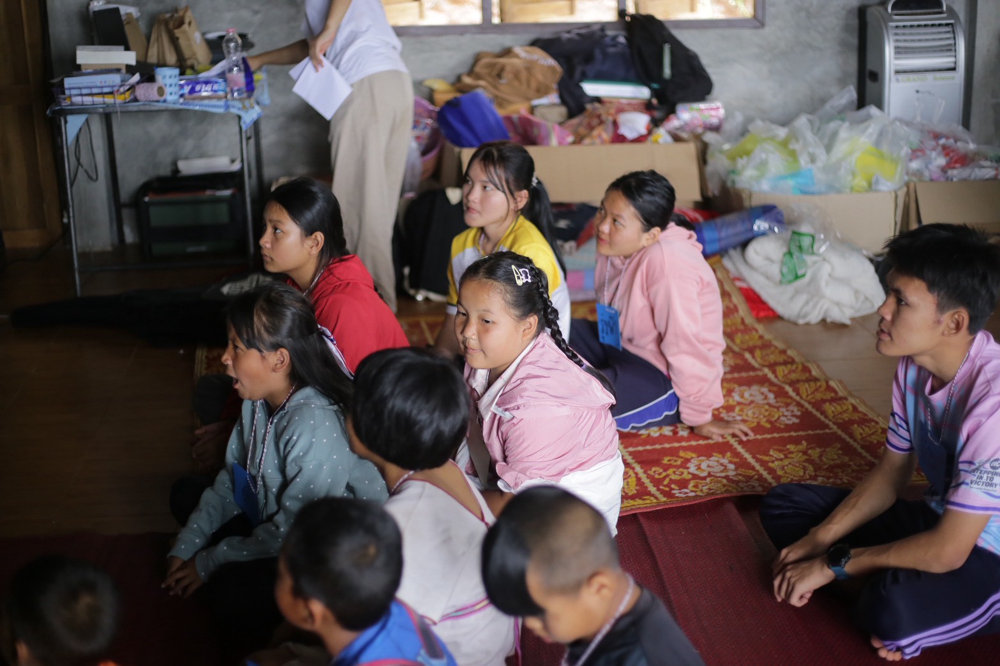
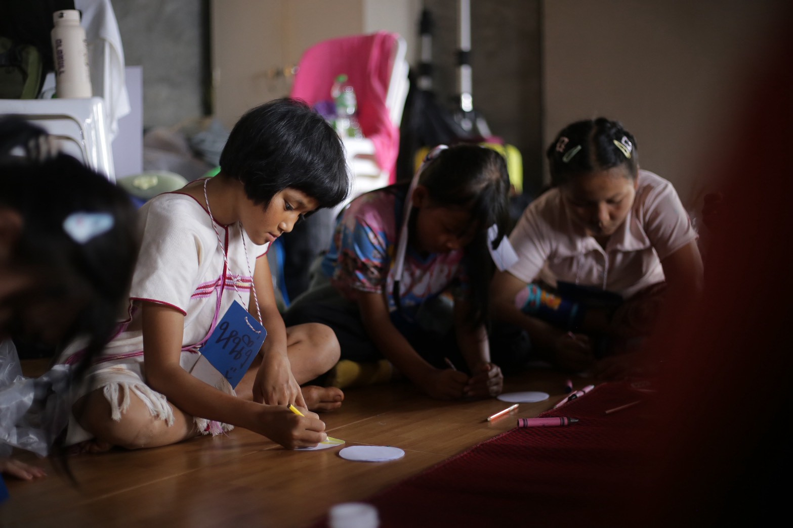
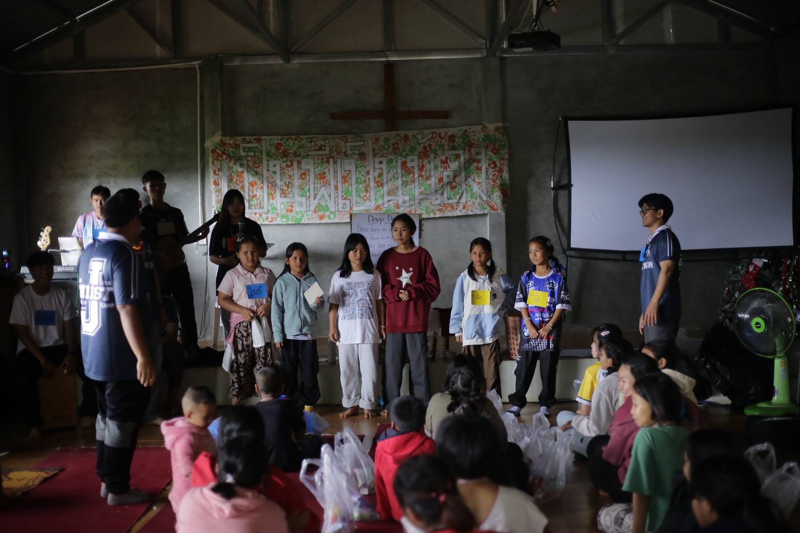
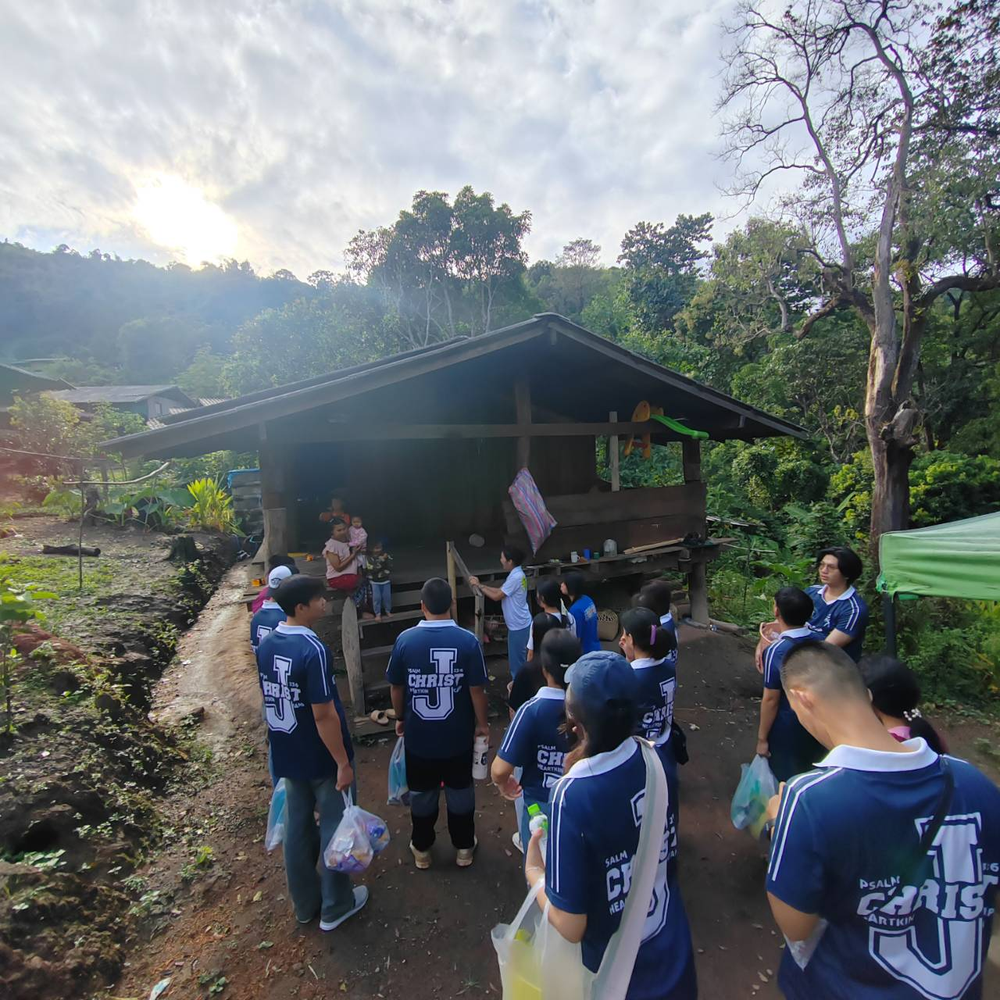

สร้างพลังและแรงบันดาลใจให้เยาวชน
ส่งต่อความใส่ใจ การเป็นพี่เลี้ยง และความสัมพันธ์ที่ดีผ่านเวลา การกระทำ และการรับฟังอย่างจริงใจ

Community Youth Mentorship Camp
Ben Pi Ben Nong
เชื่อมโยงด้วยความใส่ใจ เติบโตไปด้วยกันเหมือนครอบครัว
About The Project
โครงการ “เป็นพี่เป็นน้อง” เริ่มต้นขึ้นในปี 2024 จากความตั้งใจที่จะสร้างอิมแพกต์เชิงบวก และเป็นพื้นที่แห่งการสนับสนุนสำหรับเด็ก เยาวชน นิสิตนักศึกษา และอาสาสมัครทุกคนที่เข้าร่วม
เราเชื่อว่าทุกเรื่องราวและประสบการณ์ชีวิตจากพี่ๆ มหาวิทยาลัยสามารถกลายเป็นพลังใจให้น้องๆ เห็นศักยภาพในตัวเอง มีความมั่นใจในอนาคต และรู้สึกว่าพวกเขาไม่ได้เดินอยู่ลำพัง
What We Do
ส่งต่อความใส่ใจ การเป็นพี่เลี้ยง และความสัมพันธ์ที่ดีผ่านเวลา การกระทำ และการรับฟังอย่างจริงใจ
พี่ๆ มหาวิทยาลัยร่วมเล่าเรื่องการเรียน บทเรียนชีวิต และการก้าวผ่านอุปสรรค เพื่อเปิดมุมมองใหม่ให้น้องๆ
ชวนน้องๆ ฝึก Soft Skills เช่น การทำงานเป็นทีม การสื่อสาร ความมั่นใจ และความรับผิดชอบผ่านกิจกรรมกลุ่ม
เปลี่ยนภาษาอังกฤษให้เข้าถึงง่ายผ่านเกม บทสนทนา กิจกรรมสร้างสรรค์ และการทำงานร่วมกัน
เปิดพื้นที่ปลอดภัยสำหรับการแลกเปลี่ยนความคิดเห็น การยอมรับ และการพัฒนาตนเองอย่างรอบด้าน
Our Journey

ค่ายครั้งที่ 1 — ปี 2024
20-22 ก.ย.
ค่ายแรกเริ่มจากการวางแผนและดำเนินงานโดยกลุ่มนักศึกษา เราออกเดินทางด้วยความตั้งใจไปเป็นผู้ให้ แต่กลับได้รับแรงบันดาลใจมากมายจากเรื่องราวชีวิตและมุมมองของคนในพื้นที่

ค่ายครั้งที่ 2 — ปี 2025
31 ต.ค. - 2 พ.ย.
ค่ายนี้ตอกย้ำว่าการเตรียมตัวและการเป็นพี่เลี้ยงอย่างมีระบบสามารถสร้างการเปลี่ยนแปลงเชิงบวก ให้กับทั้งเด็กๆ และอาสาสมัครได้อย่างยั่งยืน





Goals
Support The Camp
การสนับสนุนของท่านจะช่วยขับเคลื่อนกิจกรรมสำหรับเด็กและครอบครัวในชุมชนบ้านบนนา และทำให้การเดินทางของน้องๆ ที่อยู่ไกลเกิดขึ้นได้อย่างเท่าเทียม
ทุกการสนับสนุนถูกนำไปใช้กับอาหาร การเดินทาง อุปกรณ์กิจกรรม ของเยี่ยมบ้าน และค่าใช้จ่ายส่วนกลางของค่าย